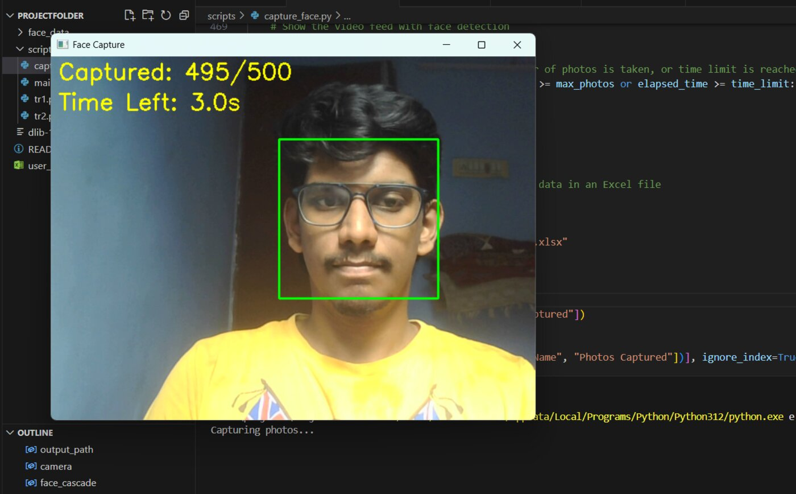
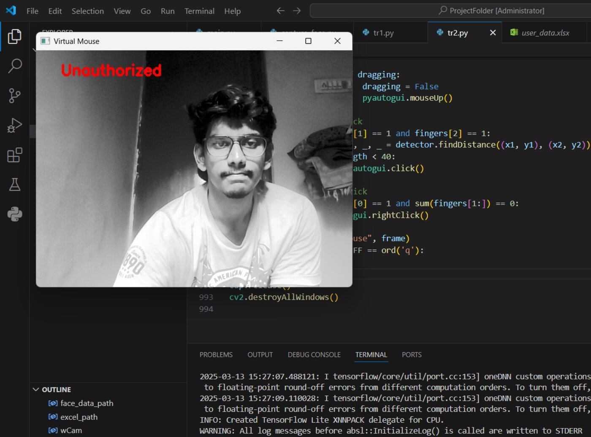
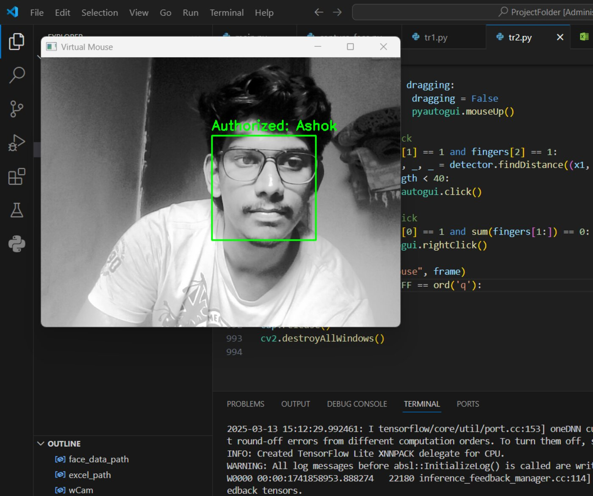
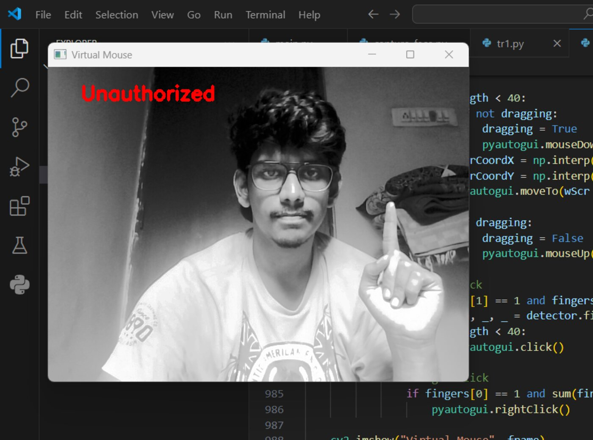

Intelligent Security System: Face Recognition with Virtual Mouse Integration
M.Sc. Final Year Project · D.G. Vaishnav College, 2025
A touch-free, secure human–computer interface. Users are authenticated through a face_recognition/OpenCV pipeline that captures face images, extracts facial encodings, and matches them against stored profiles — denying access to anyone not recognised. Once authenticated, hand-gesture tracking (via cvzone) maps finger landmarks to screen coordinates through linear interpolation, letting the user move the cursor, click, right-click and drag with gestures alone. The system also includes voice-assistant capability, and logs session/user data to an Excel sheet for management — built as an accessible, hygienic alternative to physical input devices.
PythonOpenCVface_recognitioncvzonePyAutoGUIExcel Logging



